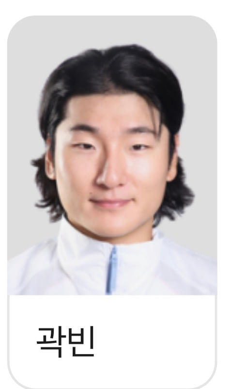
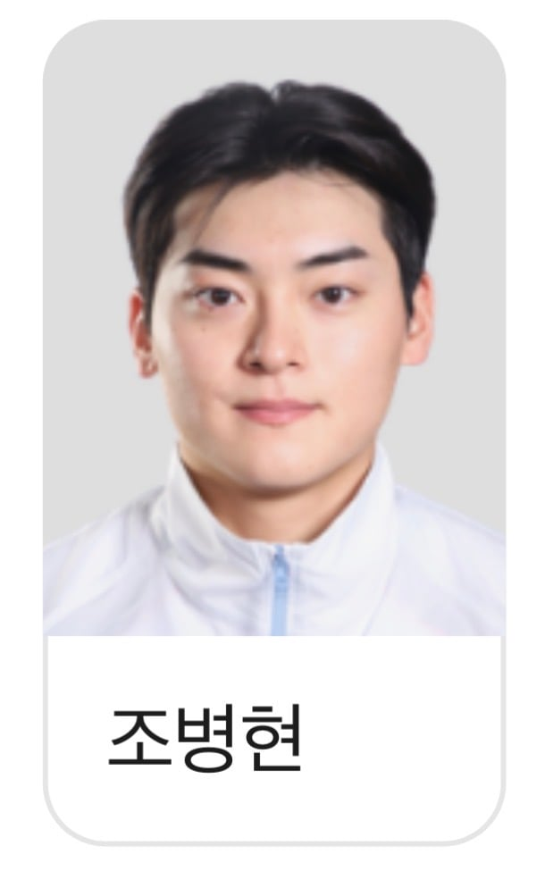
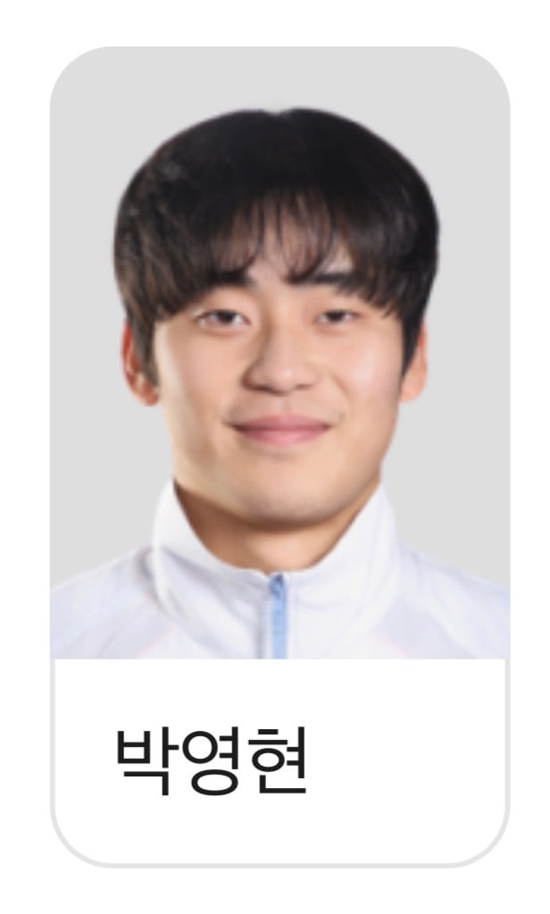

셋 모두 이미 군대와는 관련없음. 면제거나 이미 상무다녀옴.
군대다녀온 형들이 캐리함



셋 모두 이미 군대와는 관련없음. 면제거나 이미 상무다녀옴.
군대다녀온 형들이 캐리함
쾌락 없는 책임 아니냐고 ㅋㅋㅋㅋ
류지현 이 씹새끼 미필투수는 쓰지도 않을 거면서 왜 처뽑아간건지 모르겠음
그 놈의 팀쿼터도 어이 없긴 함
팀쿼터는 뭐.....
대놓고 군면제를 노리고 뽑는건데 막말로 한팀에 6명 7명 몰빵해주면 추후 시즌에 그 팀만 존나 유리해지기때문에 어찌보면 당연한거임.
당연한게 아니라 성적순 세우고 잘하는 애들 우선으로 데려가는게 공평한거지
그 논리면 오히려 역차별임
ㅇㅇ 니말도 맞지
근데 kbo리그 전체로 봤을때 성적순으로만 쭉 뽑아서 갈 경우를 극단적으로 보면 어느 한팀에 주전 붙박이가 한 6명정도 차출되는 상황을 가정하면
1. 해당팀 그시즌 좆됨.
2. 군면제를 받게 되면 이후 다른팀들이 불리해짐.
무조건 성적순으로 짤라야지 라고 하기엔 무리가 있음. 현실적인 타협안을 말하는거지 난.
팀 쿼터 안 하면 국대 많이 뽑힌 팀은 그 해 리그를 조짐. 리그도 조졌는데 금메달도 못 따면 걍 순수하게 피해자가 되는거라 팀 쿼터는 유지할 수밖에 없음
결국 병역 해결한놈들만 뒤지게 갈리다가 끝남 ㅋㅋㅋㅋㅋ
두산팬들 오열각
머 그래도 민석이 준순이정도면 자기역할정도는했고 딱 면제도받아가네
근데 최준용 나온적은 있음??
ㅇㅇ 1이닝함
+ 김주원도 넣어줘
군필인데 얘도 거의 모든겜 유격수 선발출장한듯..
이재현은 대체 왜 뽑음..
다른거 없음 곽빈 원탑
곽빈은 진짜 미국갈것같네
최준용 김진욱은 좀 썼나?
김진욱은 멀티이닝으로 좀 굴렸는데 최준용은 1이닝 나왔대
곽빈은 진짜 물건이더라 해외 팀들 상대로 조금만 더 보여주면 메이저급이라는거 거의 이견이 없을거 같던데
곽빈은 아시안게임 대표팀 아니라 그냥 국대에서도 1선발 옵션이라 ㅋㅋ
곽빈 안우진 김도영은 메이저 확정이지ㅋㅋ
야수도 군필들이 다 해줌ㅋㅋㅋㅋ
아이고 휘집아..
오늘 엉망지찬이 보니 군필이라고 다 한건 아니다..
오늘 형들한테 단체로 절해라
그래도 8회 지찬이부터 도영이 보경이까지 그떄부터 게임체인지였오,..,
잘해찌이… 투수 특이라니께…
분명 야겜이었는데...
ㅋㅋㅋㅋㅋㅋㅋㅋㅋㅋㅋㅋ 책임없는 쾌락